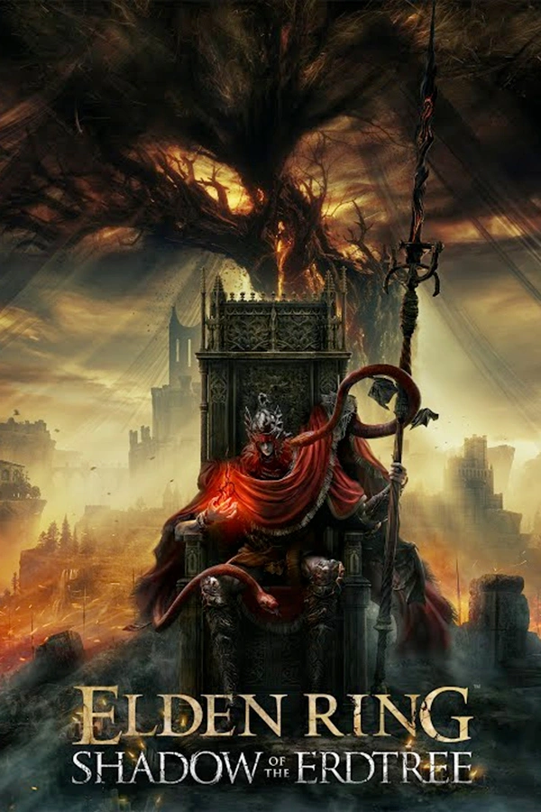

Welcome to Gamers Capital
Gaming news, release updates, and quick previews in one place.
Gamers Capital is designed for players who want short, useful updates about major releases and popular games. The site highlights trailers, expansions, gameplay information, and helpful details so visitors can quickly decide what they want to play or follow next.
GTA 6 Gets New Trailer!
Rockstar Games has shown more of Grand Theft Auto VI, giving fans another look at Vice City, the main characters, and the open world. This update is one of the most talked-about gaming headlines because players are excited to see what the next major GTA title will bring.
Read More
Elden Ring: Shadow of the Erdtree
FromSoftware expanded the world of Elden Ring with Shadow of the Erdtree. Fans can explore new locations, fight challenging bosses, and discover more story details. Updates like this help players decide what games and expansions they want to follow next.
View Gallery